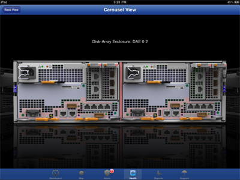
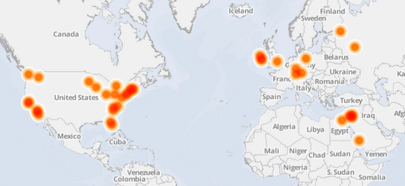

Portfolio
Development Projects
-
SimpliVity REST API
I led a team developing the HPE Simplivity REST API. This is a full function API developed over the last few years to manage HPE SimpliVity Omnistack Hyperconverged Infrastructure.
-
EMC Unisphere Management Suite
EMC Unisphere for the VNX family was the product framework I spent most of my my time at EMC working on. We migrated from Java to Adobe Flex to HTML5/JavaScript/Sencha ExtJS over time. With each new release, one of my main goals was to make the product easier to user, even with the addition of new features.
Watch a video of Unisphere in action -
Unisphere Mobile iPad App
Unisphere Mobile is a native iPad app written in Objective C. It meets the most common mobile use cases for storage array management via dashboard, reports, alerts, support, etc. I started the coding and lead a small international team to complete the app. Unisphere Mobile was featured in an EMC World keynote address.
-
Augmented Reality for Storage Management

Mobile apps such as Yelp Monocle, World Lens and Google Googles use the camera, GPS, and compass to show virtual items in a real world. Why not do the same for storage management?
Customers can point their iPhone camera at a VNX array and overlay virtual displays of power consumption, temperature, hardware faults, IOPs, CPU utilization, remaining capacity, etc. Or point their Android camera at a VNXe array and see a pie chart breaking down storage utilization by application. Or show bytes flowing from a host to an array. -
KenKen Solver
I love to solve kenken puzzles, but I have some trouble with the Sunday New York Times 7 by 7 puzzle. So I created a responsive HTML5 app using AngularJS and Bootstrap to provide some hints. Just fill in the puzzle and press the Solve buttons to uncover one cell or all of them. Source on github.
{kind=link}
Data Analytics and Visualization
-
EMC Patent Investigation

EMC Corporation holds several thousand US Patents. I was curious about how inventors work together and influence each other in small clusters with a few key individuals spanning these clusters. Also, I wanted to learn more about using Python, R, Gephi, iGraph, and Pajek.
-
Pull Request Visualization
To encourage team members to submit smaller, more incremental pull requests, I extracted all the team's git commits over the last year and a half and plotted the data as circles with the radius of the circle proportional to the number of files committed and the opacity of the circle to the length of time that the pull request was open. Over time the team has gotten better at creating smaller pull requests that are merged into mainline more frequenty. I used python and D3/Javascript to implement this.
-
Pull Request Comments
To illustrate the flow of comments from scrum team members on Pull Requests over a few months, I extracted the data from Stash using REST and create an interactive Chord diagram using D3 showing who is commenting on each other's PRs. This helped to push some team members to increase their participation.
-
Socialcast

Our division used an enterprise social networking platform called Socialcast from VMWare. One of the nice features is a RESTful API to run data analytics on the users, posts, comments, etc. I wrote some python scripts to mine the Socialcast and LDAP account data, merge and transform the data into csv and GDF formats. I used Gephi and Excel to visualize trends and relationships in posting and commenting.
-
Mapping University Activity Over Time
I used a RESTful API and a python script to extract and transform university related activity for EMC, including lectures, joint projects, etc. I imported the information into CartoDB to create an animated world map showing activity by date.
-
Education Level vs. Frequency of Reading the Newspaper
I wrote this paper for a Duke University course on Data Analysis and Statistical Inference comparing education level vs. frequency of reading the newspaper using Analysis of Variance (ANOVO) and R. The data came from the General Social Survey (GSS).
User Experience Design
-
Creative Innovation using a Voice of the Customer Process

At EMC, we applied a simplified version of the Lean Six Sigma Voice of the Customer Kano process to early innovation projects. I co-authored a paper describing one emerging market project which utilized this House of Quality process, describing results, benefits, and lessons learned.
-
UxD Case Study for VNXe 3200

I worked on the interaction design for the LUN Groups feature of the EMC VNXe 3200 product. We iterated through several design options to create Balsamiq mockups, and then ran usability testing with customers and internal users. After analyzing the test results, finding and fixing several problems, I updated the mockups and worked with the developer to create a prototype for another round of usability testing. This was better but still confusing in a few areas, so we improved and tested once again. For details, take a look at my case study blog post.
-
Implementation Review
After a GUI developer implements a design, I typically review the implementation. In one review/revision session with the GUI developer after implementing a simple form, we went through a few iterations to improve it.
One of my design principles minimalism - less is more. Basically reducing the design to only the most essential elements. As Jakob Neilsen says "Every extra unit of information in a dialogue competes with the relevant units of information and diminishes their relative visibility." -
Dashboard Design
Customized dashboards are an effective way to display the most important information to the end user, allowing them to act intelligently. Our design goals for the Unisphere Dashboard framework were to make it very easy to add, remove, and customize widgets, create multiple dashboard views, and provide drill-down capabilities for more information.
-
Guerrilla Usability Testing
Often we need to quickly test some low fidelity designs to uncover any usability problems and select one design over another. One easy way to perform these tests is heading down to the cafeteria and performing guerrilla usability testing with anyone who will sign up for a 5 minute test. The typical usability test goal of getting the user to think out loud still applies, but the test is fast and much more casual. We often do this with wireframes or even paper prototypes.
-
ECUE Mobile Style Guide
I was an advisory board member of the EMC Common User Experience (ECUE), a group of over 50 UX and UI designers dedicated to creating a set of standards and guidelines for appearance, behavior, and interactivity across the EMC software products. One of the many projects I worked on was a Mobile Style Guide.
-
Measuring Usability

It's tough to objectively measure overall usability of a product. One well respected standard is the System Usability Scale (SUS). This is a simple 10 item questionnaire with a very high confidence interval for a low number of samples.
We set a minimum SUS score of 80 from the beta site users before we shipped the final product.
{kind=link}